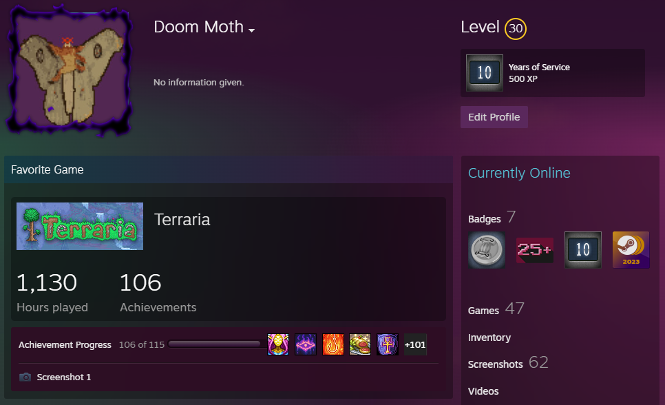

Playing Games
In an age where virtual landscapes intertwine seamlessly with reality, I find solace and exhilaration within the realms of online gaming. From the comfort of my own abode, I venture into virtual worlds teeming with adventure, competition, and camaraderie. Some may perceive it as mere leisure, but for me, it's a profound passion that ignites my spirit and sharpens my mind.
Studying Astronomy
My love for astronomy extends far beyond the confines of academic pursuit. It is a profound appreciation for the wonders of the universe and a fervent desire to unravel its deepest secrets. Whether poring over textbooks, attending lectures, or engaging in stargazing sessions, each moment spent immersed in the study of astronomy fills me with a sense of wonder and reverence for the cosmos.
Drawing

Pencil drawing is a dance of light and shadow, a delicate balance of form and texture that requires both precision and intuition. With each subtle shift in pressure, I mold graphite to my will, shaping shadows and highlights with a meticulous hand. It is a dance of patience and perseverance, where every stroke is a step towards perfection.